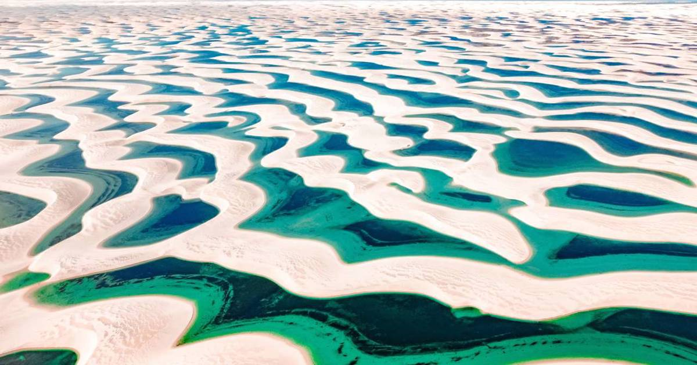

👤 Visitante


Pontos Turísticos no Maranhão
Quer descobrir novos destinos e viver experiências inesquecíveis? Temos algumas sugestões de pontos turísticos que vão encantar você!

Lençóis Maranhenses
Um dos destinos naturais mais impressionantes do Brasil, o Parque Nacional dos Lençóis Maranhenses é conhecido por suas vastas dunas e lagoas de águas cristalinas, proporcionando um cenário deslumbrante.

Centro Histórico de São Luís
Patrimônio Mundial da Humanidade, o Centro Histórico de São Luís é famoso pela sua arquitetura colonial, com casarões coloridos, igrejas históricas e ruas de paralelepípedos que preservam a rica cultura da cidade.

Palácio dos Leões
O Palácio dos Leões é um importante marco histórico e arquitetônico, que abriga o governo estadual e oferece visitas guiadas que permitem conhecer sua rica história e beleza.